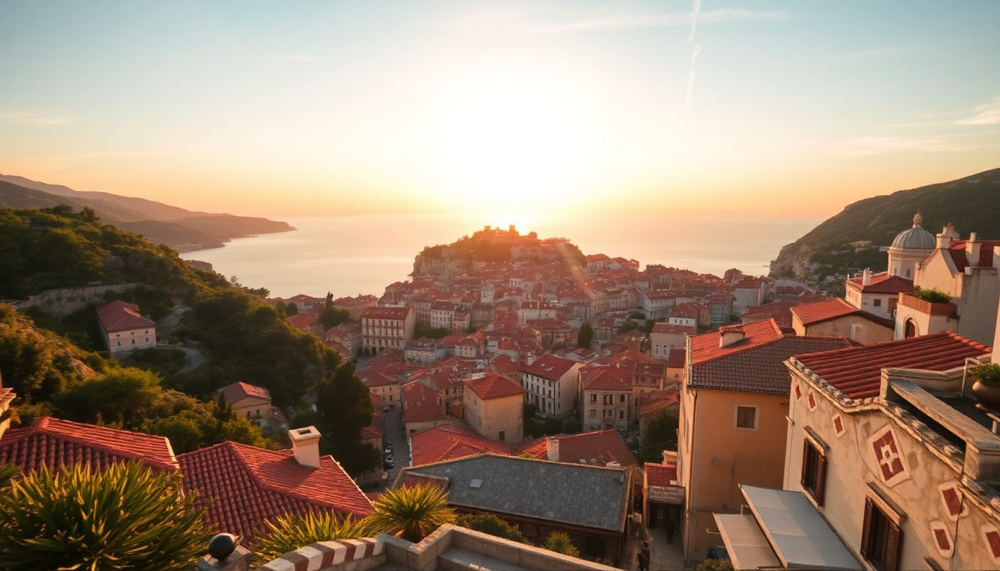

Where to Stay in Dubrovnik: Best Neighborhoods for Every Budget

I’ve been to Dubrovnik three times now, and each trip taught me something different about where to lay your head. The first time, I booked a room inside the Old Town walls and thought I’d cracked the code. The second time, I realized I’d spent half my trip dragging a suitcase up stone steps and paying €8 for a beer. This guide is what I wish I’d read before booking—neighborhoods ranked by real experience, not postcard photos.
Is the Old Town worth the premium?
If you want to roll out of bed and be at the Pile Gate in three minutes, the Old Town is unmatched. But it comes with trade-offs. Most apartments are in centuries-old stone buildings with no elevators. You will climb stairs. You will hear church bells at 7 a.m. and bar crowds until 2 a.m. in summer.
- Hotel Excelsior sits just outside the walls on the Ploče side—my favorite compromise. You get sea views and a pool, but you’re a 5-minute walk from Stradun.
- Prijeko Palace is inside the walls and quiet after midnight, but rooms are small and windows face narrow alleys.
- Apartments & Rooms Katedrala offers basic studios with kitchenettes right off the main square. Great for budget travelers who prioritize location over space.
I’d only stay inside the walls if you’re on a short trip (2-3 days) and plan to be out exploring from breakfast to late dinner. For longer stays, the noise and stair-climbing get old fast.
Why Lapad is the smart choice for most travelers
Lapad is Dubrovnik’s modern peninsula, about a 20-minute walk or 10-minute bus ride from the Old Town. It’s where locals actually live and where you’ll find proper grocery stores, normal-priced bakeries, and beaches that don’t require a towel-on-chair at 6 a.m.
- Hotel More has a famous cave bar built into the cliff and direct sea access. Rooms are modern, and the breakfast buffet is solid.
- Royal Ariston Hotel sits on the Lapad promenade with a huge outdoor pool. Good for families who want a resort feel without being isolated.
- Villa Anica is a guesthouse with simple rooms and a garden terrace. I paid €60/night in shoulder season and walked to the Old Town in 25 minutes along the coast path.
Lapad’s main beach is pebbly (bring water shoes), but the waterfront promenade is lined with restaurants that don’t charge Old Town prices. Try Orsan for grilled fish—the squid is better than anything I ate inside the walls.
Is Gruž worth considering?
Gruž is Dubrovnik’s working harbor and transport hub. Most people skip it, which is exactly why I like it. You’re near the bus station, the ferry terminal for day trips to Lokrum or Mljet, and the main market where locals buy produce.
- Hotel Lero is a no-frills 3-star with a pool and decent breakfast. Rooms are dated but clean. I’ve stayed here twice for the value.
- Berkeley Hotel & Spa is a step up—modern rooms, a rooftop bar, and a 5-minute walk from the harbor. The spa is small but welcome after a day of walking.
- Guest House Sisi offers private rooms in a family home. The host, Marija, makes homemade liqueur and gives excellent advice on which ferries to take.
The downside: Gruž is not scenic. You’ll look at container ships and bus depots. But you’ll also pay half what you’d pay in the Old Town and have easier access to day trips.
What about Ploče for a quieter Old Town experience?
Ploče is the neighborhood just east of the Old Town walls, up the hill toward the cable car station. It’s residential, quiet, and gives you views of the city and sea that you can’t get from inside the walls.
- Villa Dubrovnik is a luxury boutique hotel with a private beach and a glass-fronted elevator down the cliff. If budget allows, this is the best location in the city.
- Hotel Bellevue Dubrovnik is set into a cove with a beach that feels private. The walk to the Old Town is 15 minutes along a coastal path.
- Apartments Villa Kosovic has self-catering studios with terraces overlooking the harbor. I booked one for a week and cooked dinner most nights using produce from the Gruž market.
Ploče is ideal if you want to be close to the Old Town but not inside the chaos. The catch: it’s uphill both ways from the main gate. Taxis from the Old Town to upper Ploče cost about €5.
Should you stay in Zaton or Mlini for a beach holiday?
If your main goal is swimming and relaxing, not sightseeing, skip Dubrovnik proper and head 8–10 km north to Zaton or Mlini. These are small resort villages with sandy beaches (rare in this region) and family-run hotels.
- Hotel Uvala in Zaton has a massive beachfront and a kids’ club. Rooms are basic but the water is calm and shallow.
- Hotel Mlini sits right on a pebbly beach with a pier for sunbathing. The bus to Dubrovnik runs every 30 minutes and takes 20 minutes.
I’d only recommend this if you have a rental car or don’t mind the commute. Otherwise, you’ll spend too much time and money on transport.
FAQ
Is it better to stay inside or outside the Old Town walls?
For most people, outside is better. You get more space, quieter nights, and lower prices. Stay inside only if you’re on a short trip and want to be steps from everything. Otherwise, Lapad or Ploče give you the best balance.
How do I get from Dubrovnik Airport to my accommodation?
The airport bus drops you at the main bus station in Gruž (€8, 30 minutes). From there, taxis to the Old Town cost about €15. Pre-booked transfers through companies like GoOpti are cheaper than hailing a cab, especially for groups.
What is the best neighborhood for families with kids?
Lapad. The beaches are shallow, the promenade is stroller-friendly, and restaurants are used to children. The Royal Ariston Hotel has a kids’ pool and a playground. Avoid the Old Town unless your kids are teenagers who don’t mind stairs.
Conclusion
- Stay in Lapad for the best mix of value, beach access, and normal prices.
- Choose Ploče if you want quiet luxury within walking distance of the Old Town.
- Book Gruž only if you’re taking day trips by ferry or bus and don’t care about scenery.
- Avoid the Old Town for stays longer than 3 nights—the novelty wears off after the first suitcase haul.
- Consider Zaton or Mlini if your priority is sandy beaches and you have transport.